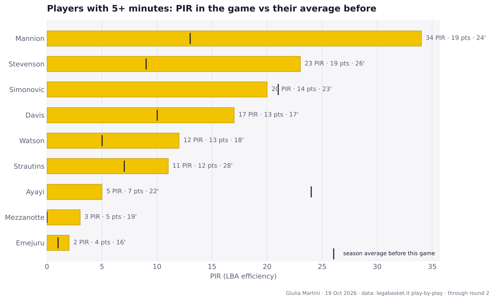
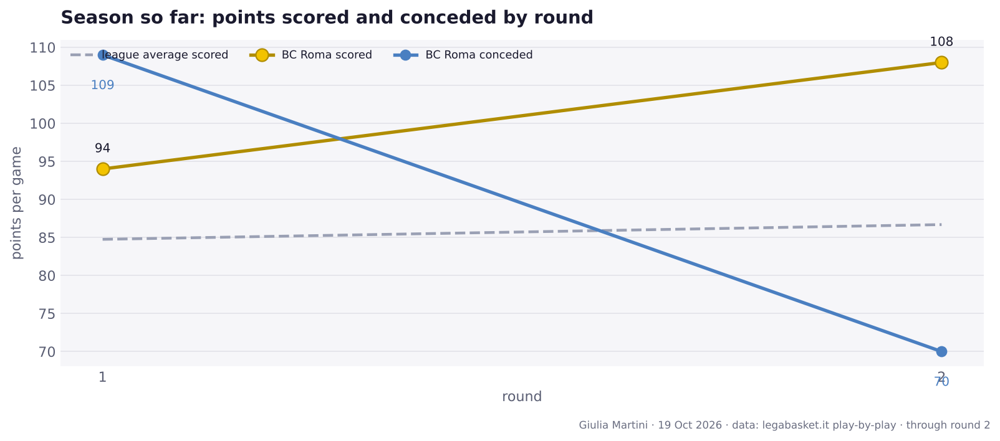

BC Roma beat Tortona, 108-70
Round 2 · Sunday 04 October 2026 · Palazzetto dello Sport, Roma · 2842 spectators
Record: 1-1 · 6th in the standings
Author: Giulia Martini
The game in numbers
| Q1 | Q2 | Q3 | Q4 | Final | |
|---|---|---|---|---|---|
| BC Roma | 25 | 31 | 24 | 28 | 108 |
| Tortona | 23 | 21 | 15 | 11 | 70 |

Team numbers
| BC Roma | Tortona | |
|---|---|---|
| Points | 108 | 70 |
| Possessions | 72.9 | 73.7 |
| Off. rating | 148.1 | 95.0 |
| eFG% | 76.2 | 39.8 |
| TOV% | 17.8 | 13.6 |
| OREB% | 50.0 | 23.8 |
| FT rate (FTA/FGA) | 28.6 | 34.4 |
| 3P | 12/27 | 5/26 |
| 2P | 30/36 | 18/38 |
| FT | 12/18 | 19/22 |
| Assists | 27 | 13 |
| Turnovers | 13 | 10 |
| Rebounds | 43 | 21 |
eFG% = (2P + 1.5 × 3P) / FGA · TOV% = turnovers per 100 possessions · OREB% = share of available offensive rebounds · FT rate = free throw attempts per field goal attempt.
Players

Playing time
Players with a significant increase in minutes versus their average in earlier games (LBA + EuroCup): at least 8' played and either +7' or +30%.
| Player | This game | Average before | Change |
|---|---|---|---|
| Mezzanotte | 19' | 11' (2 GP) | +8' (+68%) |
| Emejuru | 16' | 11' (2 GP) | +5' (+49%) |
Full box score, BC Roma
| Player | Min | Pts | 2P | 3P | FT | Reb | Ast | TOV | Stl | PIR | +/- | | --- | ---: | ---: | ---: | ---: | ---: | ---: | ---: | ---: | ---: | ---: | ---: | | **Strautins** | 28 | 12 | 3/5 | 1/4 | 3/5 | 6 | 3 | 3 | 0 | 11 | +27 | | **Stevenson** | 26 | 19 | 2/2 | 5/7 | 0/0 | 3 | 4 | 1 | 0 | 23 | +20 | | **Mannion** | 24 | 19 | 4/4 | 2/5 | 5/5 | 6 | 9 | 1 | 1 | 34 | +29 | | **Simonovic** | 23 | 14 | 6/7 | 0/2 | 2/4 | 8 | 1 | 2 | 1 | 20 | +25 | | Ayayi | 22 | 7 | 3/4 | 0/1 | 1/2 | 1 | 2 | 3 | 1 | 5 | +11 | | **Mezzanotte** | 19 | 5 | 1/2 | 1/3 | 0/0 | 3 | 0 | 0 | 0 | 3 | +19 | | Watson | 18 | 13 | 3/3 | 2/4 | 1/2 | 2 | 1 | 0 | 0 | 12 | +15 | | Davis | 17 | 13 | 5/6 | 1/1 | 0/0 | 1 | 6 | 1 | 1 | 17 | +19 | | Emejuru | 16 | 4 | 2/2 | 0/0 | 0/0 | 3 | 0 | 2 | 0 | 2 | +13 | | Odzebe | 3 | 0 | 0/0 | 0/0 | 0/0 | 0 | 0 | 0 | 0 | 0 | +5 | | Iuzzolino | 3 | 2 | 1/1 | 0/0 | 0/0 | 0 | 0 | 0 | 0 | 1 | +7 | | Tavernelli | 1 | 0 | 0/0 | 0/0 | 0/0 | 1 | 1 | 0 | 0 | 2 | +0 | Bold = starter.Full box score, Tortona
| Player | Min | Pts | 2P | 3P | FT | Reb | Ast | TOV | Stl | PIR | +/- | | --- | ---: | ---: | ---: | ---: | ---: | ---: | ---: | ---: | ---: | ---: | ---: | | **Maddox** | 27 | 15 | 2/3 | 2/8 | 5/5 | 2 | 2 | 4 | 0 | 9 | -28 | | **Olejniczak** | 26 | 9 | 2/5 | 0/0 | 5/6 | 2 | 2 | 1 | 0 | 9 | -28 | | **Gorham** | 25 | 12 | 4/6 | 0/0 | 4/4 | 3 | 1 | 1 | 0 | 12 | -25 | | **Hubb** | 25 | 8 | 2/4 | 1/8 | 1/2 | 2 | 3 | 2 | 0 | 3 | -28 | | **Jallow** | 22 | 8 | 2/2 | 1/1 | 1/2 | 1 | 1 | 0 | 0 | 8 | -23 | | Alibegovic | 20 | 4 | 2/5 | 0/1 | 0/0 | 3 | 1 | 1 | 2 | 3 | -13 | | Pecchia | 19 | 3 | 0/0 | 1/1 | 0/0 | 2 | 2 | 0 | 0 | 7 | -17 | | Durham | 15 | 7 | 3/4 | 0/4 | 1/1 | 3 | 1 | 1 | 0 | 6 | -10 | | Bortolani | 13 | 4 | 1/9 | 0/3 | 2/2 | 1 | 0 | 0 | 1 | -3 | -10 | | Gazzotti | 8 | 0 | 0/0 | 0/0 | 0/0 | 0 | 0 | 0 | 0 | 0 | -8 | Bold = starter.Round 2 across the league
- Trento 90-93 Treviso
- Napoli 99-93 Reggio Emilia
- BC Roma 108-70 Tortona
- Scafati 77-85 Varese
- Trieste 82-87 Venezia
- Virtus Bologna 98-89 Maxima Roma
- Cantù 84-85 Udine
- Verona 75-72 Milano

Standings table
| # | Team | Pts | W-L | Diff | Results | | ---: | --- | ---: | :---: | ---: | :---: | | 1 | Virtus Bologna | 4 | 2-0 | +30 | WW | | 2 | Napoli | 4 | 2-0 | +25 | WW | | 3 | Udine | 4 | 2-0 | +25 | WW | | 4 | Treviso | 4 | 2-0 | +18 | WW | | 5 | Venezia | 4 | 2-0 | +17 | WW | | 6 | **BC Roma** | 2 | 1-1 | +23 | LW | | 7 | Tortona | 2 | 1-1 | -30 | WL | | 8 | Verona | 2 | 1-1 | -5 | LW | | 9 | Trento | 2 | 1-1 | +2 | WL | | 10 | Varese | 2 | 1-1 | -13 | LW | | 11 | Milano | 2 | 1-1 | +1 | WL | | 12 | Trieste | 0 | 0-2 | -9 | LL | | 13 | Reggio Emilia | 0 | 0-2 | -11 | LL | | 14 | Cantù | 0 | 0-2 | -13 | LL | | 15 | Maxima Roma | 0 | 0-2 | -28 | LL | | 16 | Scafati | 0 | 0-2 | -32 | LL |Season so far

Next up
Round 3: Maxima Roma (away), 2026-10-11 at 18:15.
Comments
Anyone with a GitHub account can comment here; the comments are kept as a GitHub issue of the repository, one per page.